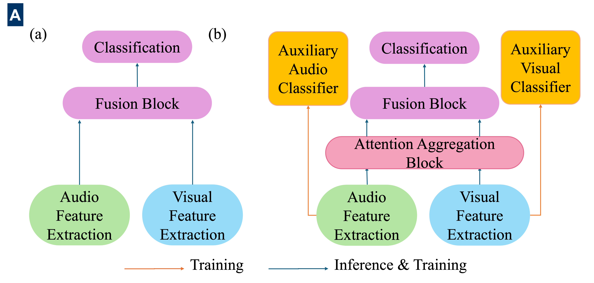
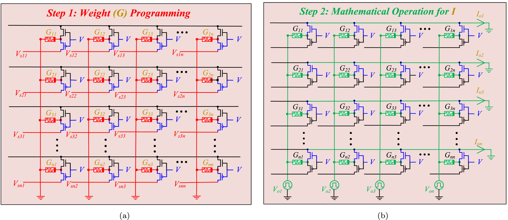
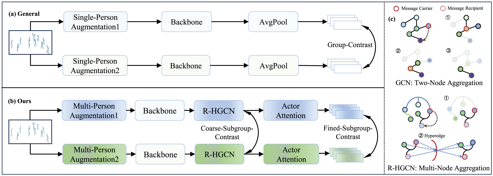
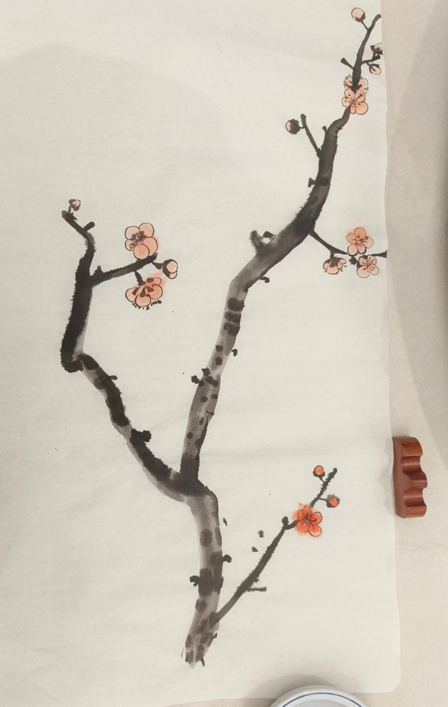

|
I'm currently a second-year master student (2022.09 - Now) in the School of Computer Science, Peking University, China, under the supervision of Prof. Hong Liu. My current research interest focuses on Affective Computing, Audio Signal Processing and Multimodal Fusion in audio or videos using deep learning approaches. |
{kind=link}
Selected Publications |
|  |
Paper /
Cite /
Code
@inproceedings{fan2024atta,
title={AttA-NET: Attention Aggregation Network for Audio-Visual Emotion Recognition},
author={Ruijia Fan, Hong Liu, Yidi Li, Peini Guo, Guoquan Wang, Ti Wang.},
booktitle={IEEE International Conference on Acoustics, Speech and Signal Processing (ICASSP)},
year={2024}
}
|
{kind=link}
|  |
|
{kind=link}
|  |
|
{kind=link}
Review ServicesJournal: IEEE Transactions on Affective Computing |
Selected Awards and HonorsOutstanding Graduate Award, Hunan Province, 2022 (Top 1%)Outstanding Graduate Award, Hunan University, 2022 (Top 5%) Second Prize of Hunan Province University Student Computer Works Competition First Prize Scholarship, Hunan University, 2021 (Top 5%) Excellence in course Performance Award, Hunan University, 2021 (Top 1%) Merit Student Scholarship, Hunan University, 2019, 2020 (Top 5%) Second Prize of Competition Scholarship, Hunan University, 2019, 2020 (Top 10%) Excellent Student Cadres Award, Hunan University, 2019, 2020 (Top 1%) |
Software CopyrightAudio-visual fusion emotion analysis software V1.0 for service-oriented robot scenarios.Hong Liu, Ruijia Fan, Yidi Li Software Copyright, Published Application Number: 2023SR0595811, 2023. |
Hobbies
|
|


|